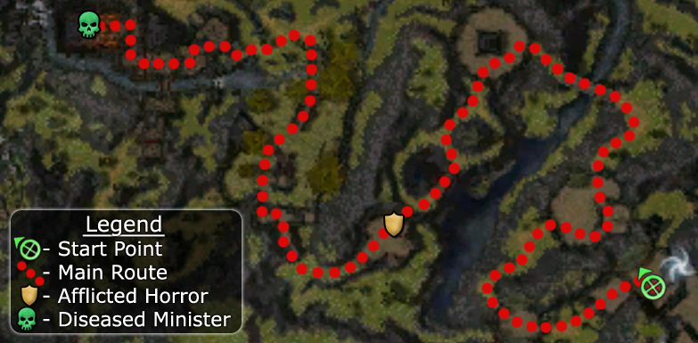

Elite: None / not listed
M1
Minister Cho's Estate
◉ Mission Map

Click to enlarge · Local cache · Wiki
Summary (click to expand)
As one of the most promising students of the Shing Jea Monastery , Master Togo has decided you've earned an introduction to Minister Cho , minister of Cultural Affairs, who resides in his estate on Shing Jea Island . Together with a fellow student, Yijo Tahn , Master Togo leds you through Sunqua Vale to the entrance of the minister's estate. On arriving at the gates, your group discovers that the minister's guards have become highly aggressive due to a strange disease that has spread on the estate. Fearing for the safety of the Minister, Master Togo leads your group to rescue him.
Region: Shing Jea Island · Mission: 1 of 13 · Type: Cooperative
✓ Objectives
Find Minister Cho.
- Master Togo must survive to reach the Minister's Estate.
- Yijo Tahn must survive to reach the Minister's Estate.
- ADDED. [sic] Defeat the afflicted minister.
→ Walkthrough
This mission is given in a tutorial style with frequent stops and locked doors where Master Togo explains to the players the fundamentals of combat including calling and attacking of a single target, sticking together as a group, using the mini map, and avoiding battling a large group of enemies by waiting for a patrol to separate from the main group.
In the initial part of the mission, there is only a single path through which players can travel under each newly opened door onto the next tutorial. Once players kill the first boss (warrior), the Afflicted Horror, the tutorial is essentially over and the path becomes more liberal. Players can follow Master Togo from this stage to avoid confusion. Players with low level characters should take care through these areas and try not to aggravate more groups of animals than necessary as well as watch for area of effect spells from the Sickened Scribes. The final fight can be tough for low level characters. Mind in particular the Afflicted Soul Explosion which occurs when the boss dies.
★ Bonus
See walkthrough and objectives for bonus details (if any).
◆ Hard Mode
Hard mode should present little trouble for a balanced party: the Sickened Servants near the end have some area of effect spells, some warriors have knock downs, and a number of foes have Primal Rage or/and Frenzy. There are no hexes and the only condition is burning from Sickened Servant's Star Burst and Sickened Scribe's Spirit Burn.
Keeping out of earshot of Yijo and Togo when they walk to/up on the bridge at the end of the menagerie (by keeping to the far left or far right of it) makes them stop on it, which can make the last bit easier by giving a bit of breathing room between encounters.
☠ Bosses & Elites
Elite: None / not listed
✦ Tips & Notes
Skill recommendations
- After completing this mission, your party ends up in Ran Musu Gardens.
- At least one player must participate in the demonstration of how to use the mini-map to continue the mission (i.e. run up to the tree Master Togo is talking about).
- After entering the menagerie area, if you keep to the far right before moving around to the next area, Yijo and Master Togo will get stuck at the end of the walkway; this allows you to continue the mission without them, preventing them from being killed prematurely. They will both catch up with you later when you talk to the Minister.
- If the player's character is from either Prophecies or Nightfall, talking to Ang the Ephemeral after completion of this mission will have no effect.
- During one of the tutorials, Master Togo attempts to pull a set of guards away from their post. Since they will not attack until Togo is in range, they can easily be killed without fear of reprisal.
- Completion of this mission in Hard Mode will fill in page #9 of the Young Heroes of Tyria storybook.
Notes
- After completing this mission, your party ends up in Ran Musu Gardens.
- At least one player must participate in the demonstration of how to use the mini-map to continue the mission (i.e. run up to the tree Master Togo is talking about).
- After entering the menagerie area, if you keep to the far right before moving around to the next area, Yijo and Master Togo will get stuck at the end of the walkway; this allows you to continue the mission without them, preventing them from being killed prematurely. They will both catch up with you later when you talk to the Minister.
- If the player's character is from either Prophecies or Nightfall, talking to Ang the Ephemeral after completion of this mission will have no effect.
- During one of the tutorials, Master Togo attempts to pull a set of guards away from their post. Since they will not attack until Togo is in range, they can easily be killed without fear of reprisal.
- Completion of this mission in Hard Mode will fill in page #9 of the Young Heroes of Tyria storybook.